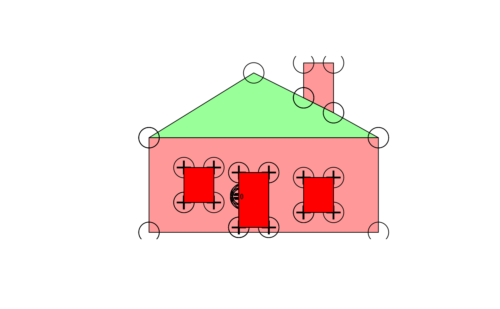

Decompose a Spatial or sf object to a single table structured as a row for every coordinate in all the sub-geometries, including duplicated coordinates that close polygonal rings, close lines and shared vertices between objects.
# S3 method for SpatialPolygons
sptable(x, ...)
# S3 method for SpatialLines
sptable(x, ...)
# S3 method for SpatialPointsDataFrame
sptable(x, ...)
# S3 method for SpatialMultiPointsDataFrame
sptable(x, ...)
sptable(object) <- value
sptable(x, ...)
# S3 method for trip
map_table(x, ...)Spatial object
ignored
Spatial object
modified sptable version of object
Spatial object
tibble with columns
SpatialPolygonsDataFrame "object_" "branch_" "island_" "order_" "x" "y_"
SpatialLinesDataFrame "object_" "branch_" "order_" "x_" "y_"
SpatialPointsDataFrame "object_" x_" "y_"
SpatialMultiPointsDataFrame "object_" "branch_" "x_" "y_"
sf some combination of the above
Input can be a of type sf or SpatialPolygonsDataFrame, SpatialLinesDataFrame, SpatialMultiPointsDataFrame or a SpatialPointsDataFrame.
For simplicity sptable and its inverses sp and sf assume that all geometry can be encoded with object, branch, island, order, x and y.
and that the type of topology is identified by which of these are present.
For simple features objects with mixed types of topology the result is consistent, but probably not useful. Columns that aren't present in one type will be present, padded with NA. (This is work in progress).
## holey is a decomposed SpatialPolygonsDataFrame
spdata <- sp(holey)
library(sp)
plot(spdata, col = rainbow(nrow(spdata), alpha = 0.4))
points(holey$x_, holey$y_, cex = 4)
holes <- subset(holey, !island_)
## add the points that only belong to holes
points(holes$x_, holes$y_, pch = "+", cex = 2)
## manipulate based on topology
## convert to not-holes
notahole <- holes
notahole$island_ <- TRUE
#also convert to singular objects - note that this now means we have an overlapping pair of polys
#because the door had a hole filled by another object
notahole$object_ <- notahole$branch_
plot(sp(notahole), add = TRUE, col = "red")
